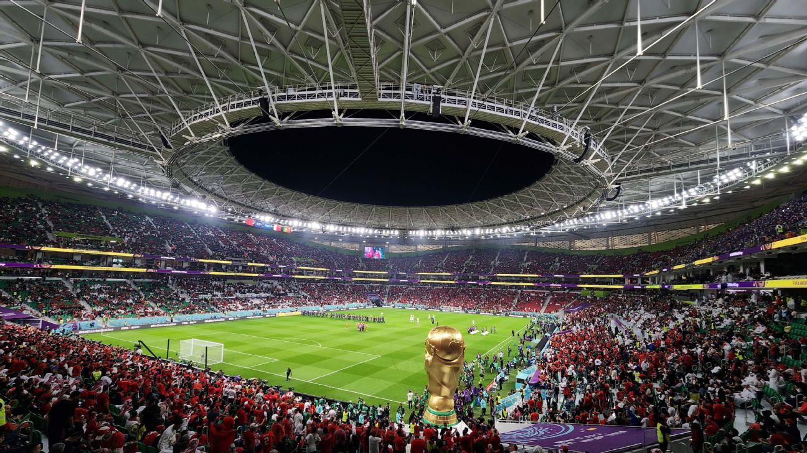
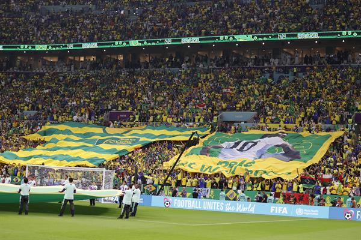
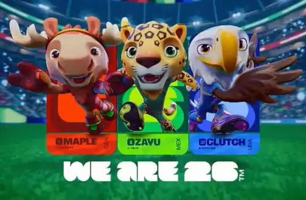
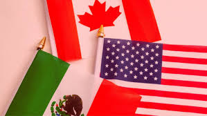
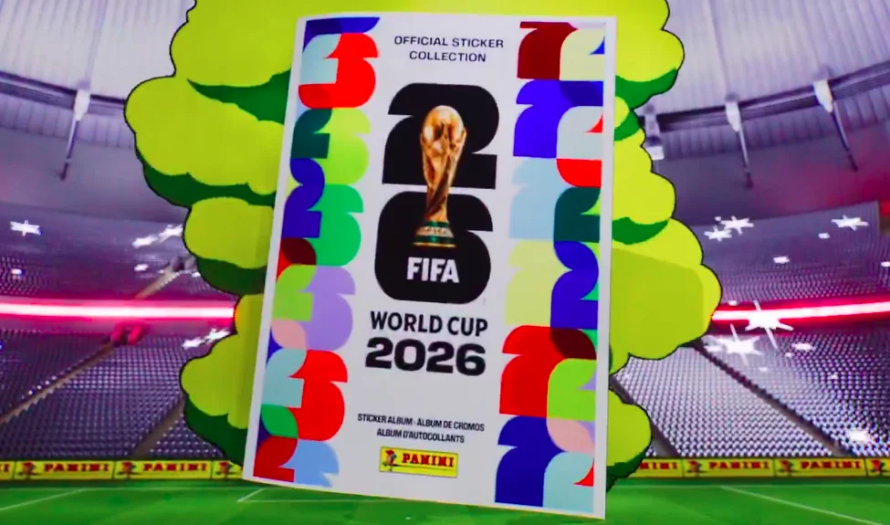
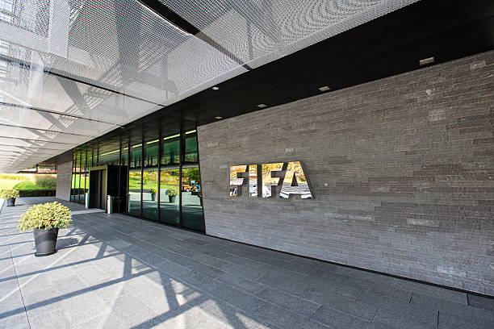

Sedes e Estádios Confirmados
A Copa de 2026 será disputada em três países, com estádios modernos e grande expectativa de público.
Conhecer históricoEspecial Copa do Mundo
Tudo em um só lugar: história, jogos, seleções, cultura de Copa e curiosidades para quem vive o clima do Mundial.
Ver Próximos Jogos
A Copa de 2026 será disputada em três países, com estádios modernos e grande expectativa de público.
Conhecer histórico
Brasil, França e Argentina aparecem entre as favoritas, mas surpresas sempre fazem parte do torneio.
Ver seleções
O novo formato aumenta a diversidade de países participantes e torna a fase inicial ainda mais intensa.
Ver tabela de jogos| Jogador | Seleção | Gols |
|---|---|---|
| Miroslav Klose | Alemanha | 16 |
| Ronaldo | Brasil | 15 |
| Gerd Muller | Alemanha | 14 |
| Just Fontaine | França | 13 |
| Lionel Messi | Argentina | 13 |
| Jogador | Seleção | Assistências |
|---|---|---|
| Lionel Messi | Argentina | 8 |
| Diego Maradona | Argentina | 8 |
| Pelé | Brasil | 6 |
| Thomas Muller | Alemanha | 6 |
| David Beckham | Inglaterra | 5 |

Dos clássicos aos mais modernos, os mascotes ajudam a contar a identidade visual de cada edição e viram febre entre os fãs.

Canadá, Estados Unidos e México compartilham o palco em 2026, com diferentes culturas e estilos de torcida.

Quem nunca trocou repetida no recreio? O álbum é tradição pura e deixa o clima de Copa ainda mais divertido.
Para conferir calendário oficial, grupos e notícias atualizadas, acesse o site da FIFA.

Acessar FIFA